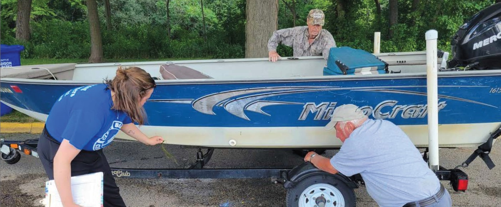

Clean Boats, Clean Waters
Our community-funded boat inspection program: the front line of defense against aquatic invasive species on Lake Julia.
Our community-funded boat inspection program: the front line of defense against aquatic invasive species on Lake Julia.
Our Response to Aquatic Invasives

For several years, the Association has applied for and received state grants to fund boat inspection at the public landing on Lake Julia. Boat inspection, which checks for stray aquatic plants carried in from other lakes, is one of the few practical tools available to prevent Eurasian Water Milfoil from entering the lake.
The program is administered through UW Extension-Lakes at UW-Stevens Point. The state provides up to $4,000 annually in matching grants; the remainder of the ~$13,000 annual program cost is funded by resident donations. It is one of the Association's chief fundraising priorities, and a direct expression of what this community values: keeping Lake Julia clean for future generations.
Monitors are stationed at the Lake Julia boat landing from Memorial Day through Labor Day. Their job is straightforward: greet boaters, check for aquatic plant hitchhikers that could carry Eurasian Water Milfoil or other invasives into the lake, and encourage responsible lake access.
For 2026, four paid monitors are returning from last year. All are part-time, and due to other jobs, internships, and summer commitments, they have less availability than in previous seasons. That gap is filled by community volunteers: lake residents who give a few hours when a paid monitor cannot be there.
Whether the contact is a paid monitor or a volunteer, every conversation at the landing carries the same message to boaters:
| Item | Amount |
|---|---|
| Annual program cost | ~$13,000 / year |
| State grant funding | ~$4,000 / year |
| Needed from residents (CBCW only) | ~$9,000 / year |
Watch the annual program orientation video: youtube.com/watch?v=RxvZuWY10xg
Get Involved
Volunteering is low-commitment and genuinely impactful. When a paid monitor slot goes uncovered, CJ Kraft, who coordinates the program for the Association, sends an email to volunteers letting them know which days need help. You reply with the hours you can be at the landing. Mornings are usually the most needed, but there is no minimum, and you decide when you can show up.
Training is simple: watch a short orientation video on your own, or arrange to meet a current volunteer at the landing and learn on the spot. Volunteers also receive a program t-shirt.
Every hour at the landing is one more hour Lake Julia is protected. Please consider helping.
CJ coordinates all volunteer scheduling. Reach out to express interest, ask questions, or sign up for uncovered days.
Email: cjkraft3@gmail.com
Phone: 262-888-3119
Without continued resident funding, the monitoring program cannot operate. Please consider contributing; any amount helps.